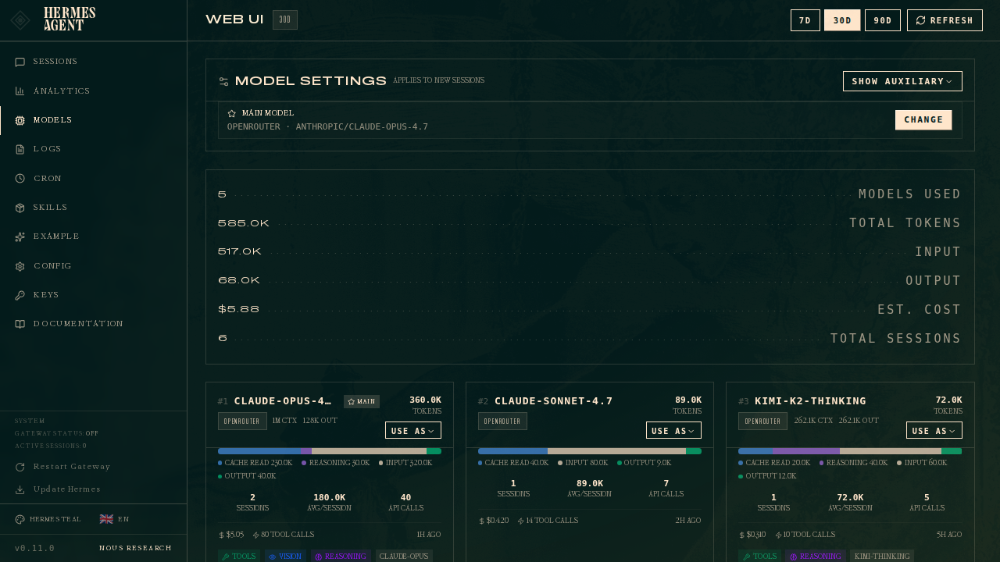
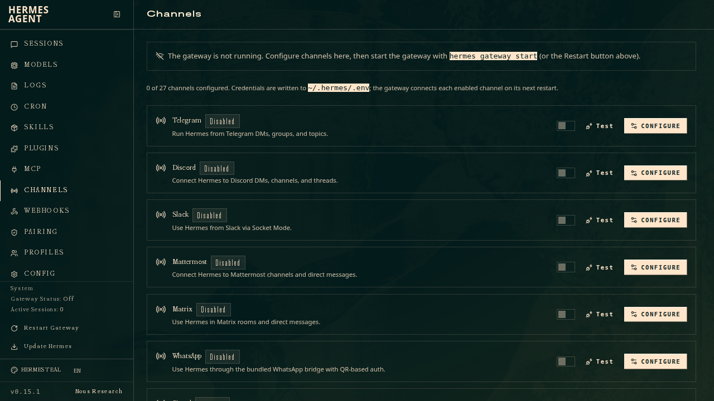

컴퓨터 한 대를 24시간 일하는 에이전트로 만듭니다
헤르메스(Hermes Agent)는 Nous Research가 공개한 오픈소스 자율 에이전트입니다. 내 맥이나 윈도우, 빌려 둔 서버에 직접 설치해 두고 그 안에서 클로드나 ChatGPT 같은 모델을 골라 붙여 씁니다. 터미널에서 부를 수도 있고 텔레그램이나 슬랙에서 말을 걸 수도 있습니다. 라이선스가 MIT라 프로그램 자체는 무료입니다. 돈은 붙여 쓴 모델 사용료에만 듭니다.
꺼지지 않습니다
게이트웨이라는 창구 프로그램 하나만 떠 있으면 메신저로 말을 걸 수 있습니다. 예약해 둔 일도 그 시각이 되면 알아서 돕니다.
모델을 갈아 끼웁니다
명령 한 줄이면 클로드에서 ChatGPT로, 제미나이나 내 컴퓨터에 깔아 둔 로컬 모델로 바꿉니다.
쓸수록 쌓입니다
대화와 기억, 스스로 만들어 둔 스킬이 한 폴더에 남아 세션이 바뀌어도 그대로 이어집니다.
다른 도구와 가장 다른 점이 여기 있습니다. 무엇을 기억하라고 따로 일러 주지 않아도 대화가 한 번 오갈 때마다 아래 셋이 저절로 돕니다. 찾는 일은 뒤에서 미리 돌아가니 답을 기다리는 시간이 늘지 않습니다.
Routines는 Anthropic 클라우드가 대신 실행해 주는 예약입니다. 따로 준비할 것이 없는 대신 정해진 틀 안에서만 쓸 수 있습니다. 헤르메스는 실행할 컴퓨터를 내가 준비하고 거기에 모델을 붙입니다. 어떤 모델을 쓸지, 어느 메신저로 받을지, 무엇을 기억시킬지 전부 직접 정합니다. 그만큼 기기 관리와 장애 대응도 직접 해야 합니다.
Nous Research가 만들었고 이름은 이 회사 모델에서 왔습니다
Nous Research는 2023년 제프리 퀘스넬을 비롯한 연구자들이 만든 뉴욕의 오픈소스 AI 연구소입니다. 모델 가중치를 공개하는 회사로 이름을 알렸습니다. 허깅페이스에 올린 Hermes 모델 계열이 대표작입니다. 헤르메스 에이전트는 이 회사가 2026년 3월에 처음 내놓은 MIT 라이선스 오픈소스 프로그램입니다.
Hermes는 이 회사가 2023년부터 공개해 온 모델 계열의 이름입니다. 에이전트가 그 이름을 그대로 물려받았습니다. 헤르메스는 그리스 신화에서 신들의 말을 사람에게 옮기는 전령입니다. 저장소 제목에도 헤르메스의 지팡이 기호 ☤가 붙어 있습니다. 다만 회사가 작명 이유를 따로 밝힌 적은 없습니다.
오픈클로(OpenClaw)와는 무엇이 다른가. 메신저로 부르고 내 기기에 상주하는 개인 에이전트라는 발상을 먼저 크게 퍼뜨린 쪽은 오픈클로입니다. 두 프로그램은 하는 일이 상당히 겹칩니다.
오픈클로
- 오스트리아 개발자 페터 슈타인베르거가 2025년 11월 24일 Warelay라는 이름으로 처음 공개했습니다
- 두 달 사이 이름이 네 번 바뀌었습니다. CLAWDIS와 Clawdbot을 거쳐, 2026년 1월 27일 Anthropic이 상표를 문제 삼자 Moltbot으로, 사흘 뒤인 30일 지금의 OpenClaw가 됐습니다.
- 몇 주 만에 깃허브 별 10만 개를 넘겼습니다
- 메일과 캘린더까지 권한을 주다 보니 프롬프트 주입 같은 보안 문제가 실제로 나왔습니다. 보안 업체 시스코는 제3자 스킬 하나가 사용자 모르게 자료를 빼돌리는 것을 찾아냈습니다
헤르메스
- Nous Research가 제공하는 에이전트입니다
- 쓰면서 스킬을 스스로 만들고 고치는 학습 루프를 앞세웁니다
- 처음부터 모델을 명령 하나로 갈아 끼울 수 있게 설계했습니다
- 오픈클로 설정을 그대로 가져오는
hermes claw migrate명령과 안내 문서가 있습니다
데스크톱 앱을 설치하는 것이 가장 쉽습니다
공식 사이트에서 설치 프로그램을 받아 실행하면 데스크톱 앱과 터미널 명령이 한꺼번에 깔립니다. 터미널을 열 일이 없다면 여기서 끝내도 됩니다.
Hermes Desktop은 터미널 버전과 같은 설정, 같은 API 키, 같은 세션과 기억을 씁니다. 한쪽에서 바꾸면 다른 쪽에도 그대로 반영됩니다. 설정 파일을 직접 열지 않고 화면에서 모델과 키를 고를 수 있어, AI 모델 연결도 여기서 처리할 수 있습니다. 이미 터미널로 설치했다면 hermes desktop으로 띄웁니다.
출처: Hermes Agent 공식 사이트
명령줄이 편하거나 리눅스와 서버에 올릴 때는 설치 스크립트를 씁니다. 스크립트가 파이썬 3.11, Node.js, ripgrep, ffmpeg 같은 준비물을 알아서 깔고 저장소를 받아 옵니다. 미리 챙길 것은 Git 하나입니다. 리눅스라면 curl과 xz-utils도 함께 있어야 합니다.
맥 · macOS
- 터미널을 열고 아래 명령을 붙여넣습니다
- 끝나면
source ~/.zshrc로 셸 설정을 다시 불러옵니다 hermes를 치면 곧바로 대화가 시작됩니다- 설정과 데이터는
~/.hermes/에 모입니다
윈도우 · Windows
- 파워셸을 열고 아래 명령을 붙여넣습니다
- 설치 위치는
%LOCALAPPDATA%\hermes\입니다.hermes명령은 사용자 PATH에 등록됩니다 - 설치가 끝난 뒤 파워셸 창을 새로 열지 않으면
hermes명령을 찾지 못합니다 - WSL2 (Windows Subsystem for Linux, 윈도우 안에서 리눅스를 돌리는 기능)를 쓰고 있다면 위의 맥·리눅스 명령을 그대로 써도 됩니다
curl -fsSL https://hermes-agent.nousresearch.com/install.sh | bash
iex (irm https://hermes-agent.nousresearch.com/install.ps1)
- 위 명령은 인터넷에서 받은 스크립트를 그대로 실행합니다. 회사 장비라면 보안 정책부터 확인하십시오. 스크립트 원문은 공개 저장소의
scripts/install.sh와scripts/install.ps1에서 열어 볼 수 있습니다. - 설치가 막히면
hermes doctor가 무엇이 빠졌는지 짚어 줍니다. 명령을 못 찾는다고 나오면 셸을 새로 열거나 PATH를 확인합니다. 윈도우 백신이uv.exe를 격리하기도 하는데, 공식 문서는 이를 오탐으로 보고 진짜 파일이 맞는지 확인하는 방법을 함께 실어 두었습니다.
클로드나 ChatGPT 등을 연결합니다
붙이는 방법은 두 가지입니다. 이미 내고 있는 구독 계정으로 로그인하거나, API 키를 발급받아 넣습니다. 어느 쪽이든 hermes model을 실행하면 화면이 순서대로 물어봅니다.
hermes setup # 처음 한 번, 전체 설정 안내 hermes model # 제공사와 모델 고르기 hermes config get model # 지금 무엇이 붙어 있는지 확인 hermes tools # 쓸 도구 켜고 끄기
방법 1. 구독 계정으로 로그인
- 따로 결제할 것이 없습니다. 키를 만들고 보관할 일도 없습니다
hermes model에서 제공사를 고르면 브라우저가 열리거나 화면에 코드가 뜹니다. ChatGPT는 그 코드를 브라우저에 넣어 로그인합니다- 클로드는 조건이 있습니다. 공식 문서는 Claude Max 플랜에 추가 사용량 크레딧을 사 둔 계정이어야 한다고 안내합니다
- 구독 사용량 안에서 도는 만큼, 많이 쓰면 한도에 먼저 걸립니다
방법 2. API 키 발급
- 구독료와 별개로 사용량만큼 냅니다. 대신 한도에 걸릴 일이 없습니다
- 서버에 올려 두고 사람 없이 오래 돌릴 때는 이쪽이 안정적입니다
- OpenRouter로 여러 회사 모델을 한 키로 쓰면서 저렴한 모델을 고르는 것도 이 방법입니다
- 발급 절차는 아래에 정리했습니다
API 키를 발급받는 순서. 처음이라면 hermes setup이 순서대로 안내합니다. 모델만 바꾸고 싶으면 hermes model을 씁니다. 목록에서 제공사를 고르면 구독 로그인은 브라우저를 열고 API 키 방식은 키를 물어봅니다. 입력한 키는 ~/.hermes/.env에, 나머지 설정은 ~/.hermes/config.yaml에 알아서 나뉘어 저장됩니다.
클로드 · Anthropic
- console.anthropic.com → 에 접속해 로그인합니다. 평소 클로드를 쓰던 계정과 같은 계정입니다
- API 키 화면에서 새 키를 만듭니다. 키 전체는 만든 직후 한 번만 보이니 그 자리에서 복사해 둡니다
- 결제 수단을 등록하고 크레딧을 채워 둬야 실제로 호출됩니다. 구독료와는 별개로 나갑니다
- 복사한 키를
hermes model이 물어볼 때 붙여넣거나,~/.hermes/.env에ANTHROPIC_API_KEY=로 적습니다
ChatGPT · OpenAI
- platform.openai.com/api-keys → 에 접속해 로그인합니다. ChatGPT를 쓰던 계정 그대로면 됩니다
- 새 키를 만듭니다. 여기서도 키 전체는 그때 한 번만 보입니다. 놓치면 지우고 다시 만들면 됩니다
- 결제 수단을 등록하고 금액을 충전해 둬야 호출됩니다. ChatGPT 구독료와는 별개입니다
- 복사한 키를
hermes model이 물어볼 때 붙여넣거나,~/.hermes/.env에OPENAI_API_KEY=로 적습니다
OpenRouter를 쓰면 OPENROUTER_API_KEY 하나로 여러 회사 모델을 부릅니다. 키는 openrouter.ai/keys → 에서 받습니다. 모델 이름은 anthropic/claude-opus-5처럼 제공사를 앞에 붙여 적습니다. 제미나이는 GOOGLE_API_KEY를 넣고, 키는 aistudio.google.com → 에서 받습니다. 로컬 모델은 Ollama나 vLLM 주소를 직접 등록해 붙입니다.
설치하면 ~/.hermes/ 폴더 하나가 생기고, 그 안에 모든 것이 들어갑니다.
같은 값이 여러 곳에 있으면 명령줄 인자가 가장 우선하고, 그다음이 config.yaml, .env, 기본값 순입니다.

출처: Hermes Agent 공식 문서
헤르메스는 컨텍스트 창이 64,000 토큰 이상인 모델을 요구합니다. 대화 요약용 모델을 따로 지정한다면 그 창이 본 모델보다 작아서는 안 됩니다. 더 작으면 대화 압축이 에러 하나 없이 실패하고 맥락만 사라집니다.
텔레그램이나 슬랙에서 말을 걸게 만듭니다
게이트웨이를 한 번 설정해 두면 메신저에서 부르는 즉시 답이 옵니다. 공식 대시보드 기준 스물일곱 개 채널을 붙일 수 있고, 그중 손이 가장 덜 가는 쪽이 텔레그램입니다.
봇 만들기
텔레그램에서 @BotFather를 찾아 /newbot을 보냅니다. 이름과 아이디를 정하면 봇 토큰을 줍니다. 이 토큰을 가진 사람은 누구나 봇을 조종할 수 있으니 밖으로 내보내지 않습니다.
내 번호 확인
@userinfobot에게 아무 말이나 보내면 숫자로 된 내 아이디를 알려 줍니다. 이 에이전트에게 말을 걸 수 있는 사람을 정하는 값입니다.
게이트웨이 설정
hermes gateway setup을 실행해 텔레그램을 고르고, 받은 토큰과 내 아이디를 넣습니다. 설정 파일은 알아서 만들어집니다.
말 걸어 보기
게이트웨이를 켠 뒤 봇에게 아무 말이나 보냅니다. 몇 초 안에 답이 오면 끝입니다. 답이 없으면 게이트웨이가 꺼져 있는지부터 봅니다.
TELEGRAM_BOT_TOKEN=123456789:ABCdefGHIjklMNOpqrSTUvwxYZ
TELEGRAM_ALLOWED_USERS=123456789
# 여러 명이 쓰려면 쉼표로 이어 적습니다
허용 목록에 없는 사람은 전부 막힙니다. 반대로 말하면 여기에 넣은 사람은 내 컴퓨터에서 도는 에이전트를 그대로 부릴 수 있습니다. 봇 토큰이 새어 나가도 마찬가지입니다. 토큰과 목록은 ~/.hermes/.env 밖으로 옮기지 마십시오.
같은 hermes gateway setup 화면에서 고르기만 하면 됩니다. 회사에서 슬랙이나 팀즈를 쓴다면 그쪽이 자연스럽습니다.
일할 때
슬랙, 마이크로소프트 팀즈, 구글 챗, 매터모스트를 붙입니다. 팀 채널에 두고 함께 쓸 수도 있습니다.
개인으로 쓸 때
텔레그램, 디스코드, 왓츠앱, 시그널, 문자, iMessage, 라인까지 있습니다.
자동으로
이메일과 웹훅도 창구가 됩니다. 다른 시스템이 보낸 신호를 받아 에이전트가 처리하게 만들 수 있습니다.

출처: Hermes Agent 공식 문서
늘 켜 두는 컴퓨터 한 대를 상주 서버로 씁니다
에이전트에게 메신저로 말을 걸거나 예약한 일을 돌리려면 게이트웨이 프로세스가 떠 있어야 합니다. 맥미니든 데스크톱이든, 책상 밑에 늘 켜 두는 컴퓨터가 한 대 있다면 거기에 올리는 편이 가장 간단합니다. 네 단계면 끝납니다.
설치와 모델 연결
앞에서 한 설치와 모델 연결을 그 컴퓨터에서 똑같이 합니다. 떨어진 곳에서 작업한다면 SSH로 들어가 진행합니다.
메신저 연결
앞의 5단계에서 한 텔레그램 연결을 이 컴퓨터에서 그대로 합니다. 이미 해 뒀다면 넘어갑니다.
자동 시작 등록
hermes gateway install을 한 번 실행하면 게이트웨이가 macOS의 launchd에 등록됩니다. 그다음부터는 로그인할 때마다 알아서 뜹니다. 등록 파일은 ~/Library/LaunchAgents/ai.hermes.gateway.plist입니다.
잠들지 않게
시스템 설정에서 잠자기를 끄고 화면만 꺼지게 둡니다. 정전 뒤 자동으로 다시 부팅되는 설정까지 함께 걸어 두면, 전원이 나갔다 들어와도 알아서 돌아옵니다.
hermes gateway start # 지금 켜기 hermes gateway status # 잘 떠 있는지 확인 tail -f ~/.hermes/logs/gateway.log # 기록 들여다보기
- 에이전트에게 "매일 아침 9시에 해 줘"라고 말로 부탁하면 알아듣고 대신 예약을 걸어 줍니다. 다만
hermes cron명령의 일정 칸에 직접 적을 때는0 9 * * 1같은 크론 문법이나every 6h같은 간격만 받습니다. - 예약된 일은 지금 대화의 기억이 없는 새 세션에서 돕니다. 필요한 파일 경로, 주소, 판단 기준을 프롬프트 안에 전부 적어 두어야 합니다.
서버를 빌려 도커로 올립니다
집이나 사무실에 늘 켜 둘 기기가 없거나 정전과 인터넷 사정에 휘둘리기 싫다면, 서버를 빌려 도커로 띄웁니다. 공식 이미지는 nousresearch/hermes-agent입니다.
서버 준비
메모리 2GB에 CPU 2코어면 넉넉합니다. 최소는 메모리 1GB, CPU 1코어, 디스크 500MB입니다.
설정 한 번
컨테이너를 한 번 띄워 놓고 화면이 묻는 대로 모델과 키를 넣습니다. 넣은 값은 서버의 ~/.hermes/에 남습니다.
상주 실행
게이트웨이를 백그라운드로 띄우고 재시작 옵션을 걸어 둡니다. 서버가 재부팅돼도 알아서 다시 뜹니다.
어디서 빌리나. 한국에서 많이 쓰는 곳 네 군데입니다. 아래는 모두 메모리 2GB 기준 요금입니다. 서울에 데이터센터가 있으면 응답이 조금 더 빠릅니다.
AWS Lightsail
서울 리전이 있습니다. 2 vCPU, 2GB 메모리, 60GB SSD. AWS 계정을 이미 쓰고 있다면 가장 손이 덜 갑니다.
공식 요금표 →
DigitalOcean
가장 가까운 데이터센터가 싱가포르입니다. 1 vCPU, 2GB 메모리, 50GB SSD. 영문 설치 문서가 잘 갖춰져 있습니다.
공식 요금표 →
AWS Lightsail과 DigitalOcean 요금은 2026년 7월에 각 사 공식 요금 페이지에서 확인했습니다. Vultr는 리전마다 값이 달라 대략적인 수준만 적었고, Hetzner는 요금표가 상품 페이지 안쪽에 있어 금액 대신 위치만 적었습니다. 요금제는 자주 바뀌니 결제 전에 다시 보십시오. 메신저로 부르고 예약 업무를 돌리는 정도라면 데이터센터가 멀어도 체감 차이는 크지 않습니다. 여기에 모델 사용료가 따로 붙는다는 점만 기억하십시오.
mkdir -p ~/.hermes docker run -it --rm \ -v ~/.hermes:/opt/data \ nousresearch/hermes-agent setup
services:
hermes:
image: nousresearch/hermes-agent:latest
container_name: hermes
restart: unless-stopped
command: gateway run
ports:
- "8642:8642"
volumes:
- ~/.hermes:/opt/data
docker compose up -d docker compose logs -f
설정과 키, 세션, 기억, 스킬, 기록이 전부 /opt/data 볼륨에 있습니다. 서버에서는 ~/.hermes/ 폴더에 해당합니다. 이미지 자체에는 아무것도 저장되지 않아서, docker pull로 새 이미지를 받고 컨테이너를 다시 만들어도 쓰던 내용이 그대로 이어집니다.
8642는 다른 프로그램이 이 에이전트를 불러 쓰는 창구입니다. 인터넷에 그대로 열어 두면 누구나 내 에이전트를 부를 수 있습니다. 방화벽으로 막거나 SSH 터널로만 접속하고, 웹 대시보드를 켠다면 인증을 반드시 겁니다. 공식 문서도 위험을 모른 채 포트를 여는 일은 말립니다.
서버 업체가 주는 브라우저 콘솔에서는 특수문자가 종종 빠집니다. API 키를 붙여넣다 값이 깨지는 일이 생깁니다. SSH로 접속해 작업하는 편이 안전합니다. 콘솔을 써야 한다면 콜론, at, 등호, 슬래시가 제대로 들어갔는지 확인한 뒤 실행합니다.
내 컴퓨터와 빌린 서버, 무엇을 고를지
두 방식의 차이는 성능이 아니라 무엇까지 내가 책임지느냐입니다. 다뤄야 할 자료가 어디에 있는지부터 보십시오.
늘 켜 둔 내 기기
- 기기값 말고 매달 나가는 돈이 없습니다
- 집이나 사무실 네트워크 안의 파일과 장비에 바로 닿습니다
- 정전, 자동 업데이트 재부팅, 인터넷 끊김을 내가 감당합니다
- 밖에서 접속하려면 연결 방법을 따로 찾아야 합니다
빌린 서버
- 매달 사용료가 나갑니다
- 전원과 회선이 안정적이라 어디서 접속해도 조건이 같습니다
- 내 로컬 파일과 사내망에는 닿지 않습니다
- 방화벽, 키 관리, 업데이트 같은 서버 관리가 내 몫입니다
처음이라면 쓰던 맥에 설치해 하루 이틀 돌려 보십시오. 계속 켜 둘 필요가 생겼을 때 늘 켜 두는 컴퓨터나 서버로 옮기면 됩니다. 설정과 기억이 ~/.hermes/ 한 폴더에 모여 있어 옮기는 일은 어렵지 않습니다. 다만 구독 로그인으로 붙인 계정은 새 기기에서 다시 인증해야 할 수 있습니다.
붙이기 전에 걸어 둘 안전장치는 세 가지입니다. 세 가지를 걸어 둔 뒤에는 에이전트에게 직접 "지금 이 설정이 안전한지, 그렇게 보는 이유가 무엇인지 알려 줘"라고 물어보십시오. 키가 그대로 드러나 있는지, 방화벽이 잘못 열려 있는지 스스로 짚어 줍니다.
권한을 좁힙니다
헤르메스는 파일을 읽고 명령을 실행하는 자율 에이전트입니다. 중요한 자료가 있는 계정에 바로 붙이기 전에 시험용 계정이나 따로 만든 폴더에서 먼저 돌려 봅니다.
대화할 사람을 정합니다
텔레그램은 허용 목록에 없는 사람을 전부 막습니다. 봇 토큰이 새면 남이 내 에이전트를 부를 수 있으니 토큰은 .env 밖으로 내보내지 않습니다.
마지막은 사람이 결정합니다
발송, 결제, 삭제처럼 되돌릴 수 없는 일은 초안까지만 맡깁니다. 사람이 지켜보지 않는 사이에 돌아가는 만큼, 이 선은 지켜야 합니다.
~/.hermes/ 폴더 안에 남습니다. 사내 자료를 다룬다면 어떤 제공사에 붙였는지부터 확인하십시오.용어 설명
텔레그램이나 슬랙으로 들어온 말을 받아 에이전트에게 넘긴 뒤, 그 답을 다시 메신저로 돌려보내는 창구 프로그램입니다. 이게 꺼져 있으면 메신저로 불러도 답이 오지 않습니다.
정한 시각에 정한 일을 자동으로 시키는 예약 장치입니다. "매주 월요일 아침 9시"를 0 9 * * 1 같은 기호로 적습니다.
프로그램과 필요한 준비물을 상자 하나에 통째로 담아 옮기는 방식입니다. 서버마다 환경을 새로 맞출 필요 없이 상자만 내려받아 실행합니다.
남의 데이터센터에 있는 컴퓨터 한 대를 매달 얼마씩 내고 빌려 쓰는 서비스입니다. 전원과 인터넷은 업체가 책임집니다.
오늘 할 일
먼저 쓰던 노트북에 설치해 hermes를 한 번 띄우고 모델을 붙여 보세요. 며칠 써 보고 계속 쓸 만하다 싶으면, 그때 늘 켜 둘 기기나 서버에 게이트웨이를 등록하면 됩니다.